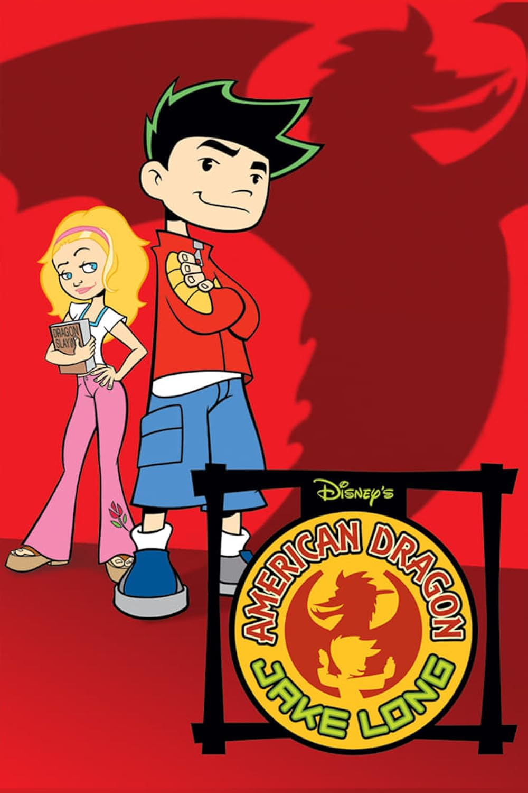
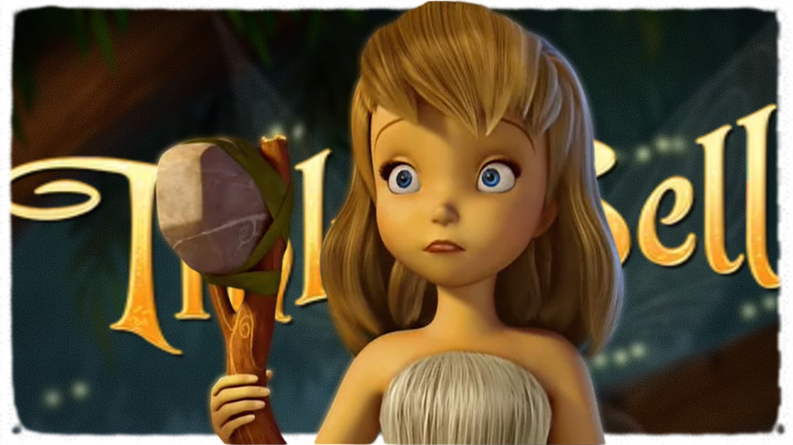

DISNEY CHANNEL
Hannah Montana
Revivimos las aventuras, las canciones y los momentos más especiales de la serie.
VER VIDEO →
Hay películas y series que nunca olvidamos. Historias que nos hicieron reír, llorar y soñar cuando éramos pequeños. Hoy regresamos a ellas para recordar por qué siguen siendo tan especiales.
REVIVIR RECUERDOSAlgunas historias nos acompañan durante toda la vida. En esta sección recordamos las películas, series y personajes que formaron parte de nuestra infancia, descubriendo qué los hizo inolvidables y cómo los vemos ahora que hemos crecido.

Una de las series más recordadas de Disney Channel. Regresamos a la doble vida de Miley Stewart para revivir sus aventuras, sus canciones y los momentos que marcaron a toda una generación.
VER EN YOUTUBEPelículas y series que siempre tendrán un lugar especial.
Revivimos las aventuras, las canciones y los momentos más especiales de la serie.
VER VIDEO →
Un reloj extraordinario, diez alienígenas y una infancia llena de aventuras.
VER VIDEO →
Rapunzel y una historia sobre descubrir el mundo, la libertad y la identidad.
VER VIDEO →
Una aventura sobre la amistad, la música y el valor de permanecer unidos.
VER VIDEO →
Regresamos al País de Nunca Jamás para recordar una historia sobre crecer y la imaginación.
VER VIDEO →
Una nueva historia que pronto volveremos a descubrir juntos.
¿Alguna vez regresaste a una película de tu infancia y descubriste algo que antes no habías notado? Aquí reflexionamos sobre los mensajes, los personajes y las emociones que encontramos al volver a ver nuestras historias favoritas.
DESCUBRIR ANÁLISIS
Revive una de nuestras historias favoritas directamente desde YouTube.